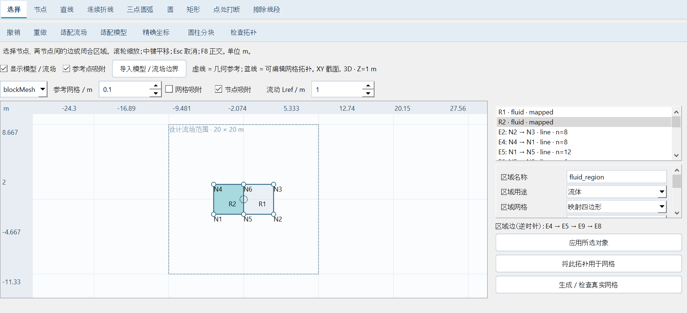
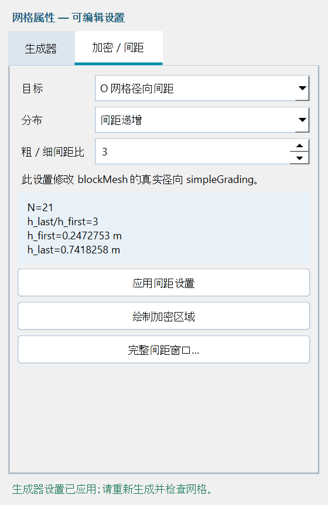
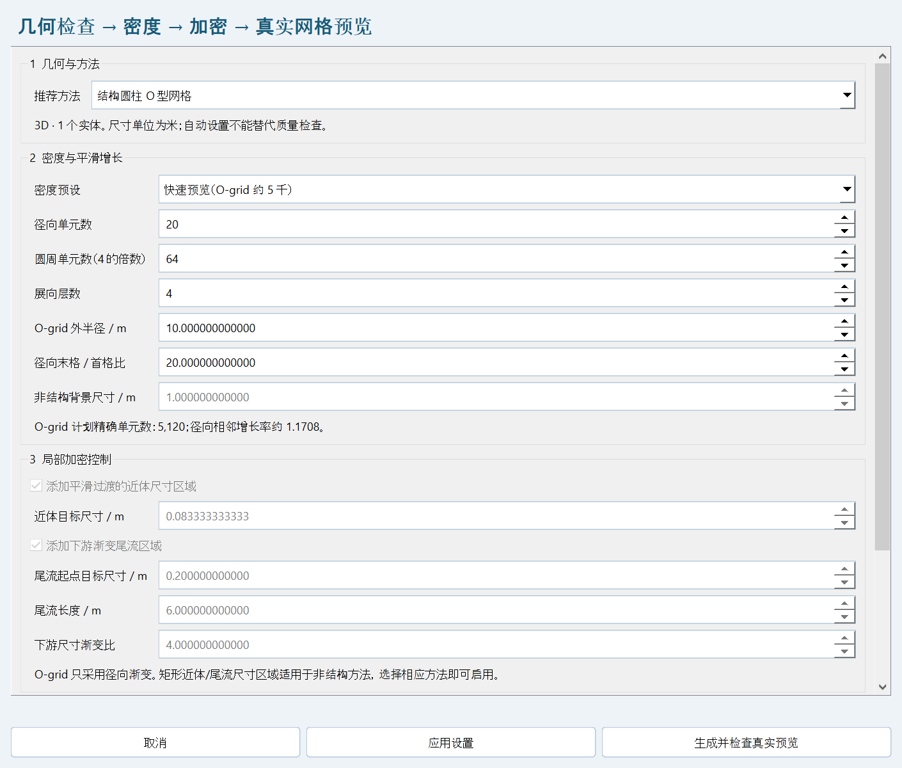
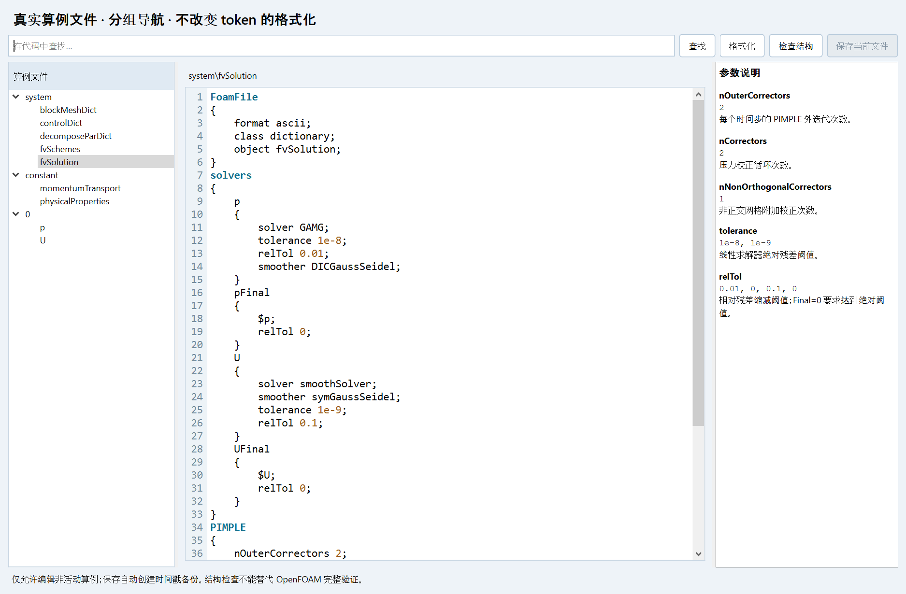
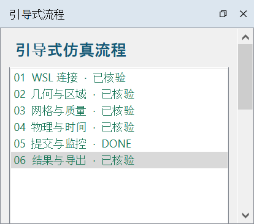
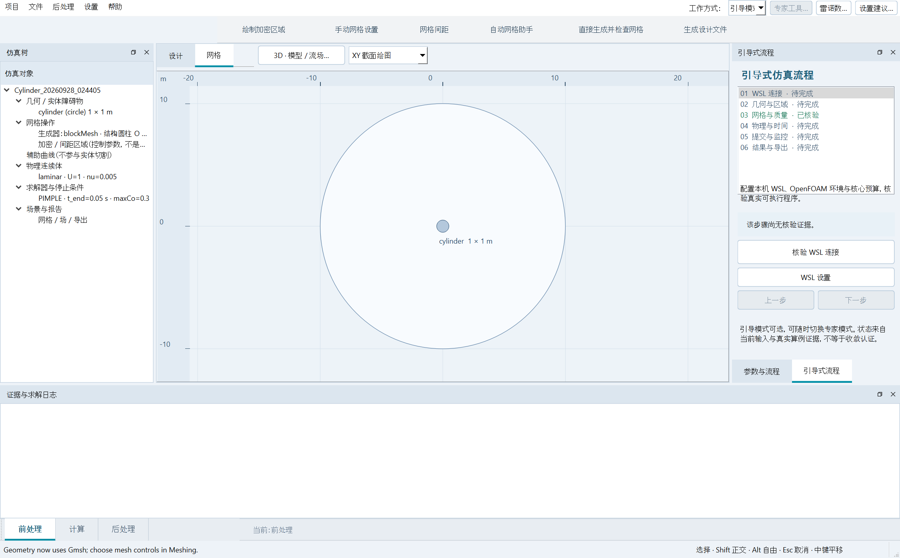

0.16 · 看得见模型的手动网格与常驻引导
手动画布显示 SI 模型、流场范围和加密参考。明确导入边界、适配模型或流场，再对可编辑区域指派网格。选择引导步骤保留当前画布；设置在主窗口属性栏内打开。
0.15 · 物理、PIMPLE、网格场导出：父项与摘要绑定修复
单击父项或摘要打开持久设置。应用固定可见；模型和 PIMPLE 修改生成真实字典；真实数据加载后启用结果按钮。
0.14 · 手动拓扑：节点、曲线与区域
前处理 → 手动拓扑。绘制直线圆弧，点处打断、擦除单段，并对闭合区域分别指派网格，使用共享边约束编译真实 blockMesh / Gmsh 网格。

0.13 · 生成器与加密：两轮工程验收
在网格操作下单击生成器或加密/间距，会进入前处理 → 网格，并显示对应的可编辑属性页。表单滚动时标题、页签和反馈仍可见。应用保存输入；生成/检查执行真实生成器。完整设置/间距窗口保留原工具。

01 · 软件概览
OpenFOAM Friend 是由 zongxuan 和 hanwen 署名的 Windows 桌面科研软件，连接用户配置的 WSL / OpenFOAM Foundation 14。几何、网格、MPI 计算队列和结果导出共享可复现的项目与真实算例文件。

02 · 安装与换电脑适配
- 时间戳版本目录与
runtime同级。新电脑先安装 64 位 Python 3.12、Windows WSL，以及 Linux 发行版中的 OpenFOAM Foundation 14。ZIP 包含源码与证据，不包含 Linux 系统镜像。 - 在版本目录打开 PowerShell，执行下方安装命令。安装器创建本地 Python 环境并下载依赖。
- 双击包根目录的
OpenFOAM Friend.cmd，或版本目录中的launch.cmd。 - 点击 WSL connection & CPU budget，设置发行版名称、实际 OpenFOAM bashrc、自己的 Linux 算例目录、CPU 预算与轮询间隔。确认后查看日志中的 WSL PROBE。不要把本机用户名直接照搬到其他电脑。
powershell -NoProfile -ExecutionPolicy Bypass -File .\install.ps1 # Inspect Linux distribution names wsl --list --verbose # Example only: replace Ubuntu and the Linux username on another PC wsl -d Ubuntu -- bash -lc "source /opt/openfoam14/etc/bashrc; command -v foamRun; foamRun -help"
| 配置项 | 含义 |
|---|---|
| distro | 实际安装的 WSL 发行版名称，例如 Ubuntu。 |
| bashrc | Foundation 14 环境脚本的完整 Linux 路径。 |
| run_dir | Linux 绝对路径，例如 /home/yourname/OpenFOAM/yourname14/run。GUI 用 \wsl.localhost 路径打开。 |
| max_cores | 本软件队列总 CPU 核心预算。暂停算例仍占用预算。 |
| poll_seconds | 轮询秒数；交互测试可用 10，较大任务可用 30–60。 |
机器配置：%APPDATA%\OpenFoamFriend\profile.json。*.off.json 项目可迁移；队列数据库与已有算例路径属于原电脑。换机使用新队列，不要复制 data/jobs.sqlite。Windows 脚本使用本地磁盘对应的 WSL /mnt 路径。本次尚未在另一台实体电脑上实测安装。
0.3 升级 · 双语设置、网格助手与清晰代码界面
设置 → Language / 语言 → English 或 中文：主界面立即切换，选择保存到 %APPDATA%/OpenFoamFriend/ui.json。已经打开的对话框关闭后重新打开即可切换。OpenFOAM 字典关键字、物理单位与项目内部规范值保持一致。

分阶段自动网格流程
- 绘制几何后点击自动网格助手。确认二维/三维与方法：单个圆推荐圆柱 O-grid；一般平面障碍物推荐 Gmsh 三角形/棱柱；无障碍矩形流场可用共形分块。
- 选择快速预览、均衡或精细预设，再调整实际数量与尺寸。O-grid 单元数为 Nr × Nθ × Nz（二维 Nz=1）；四层三维预设为 5120、20480、81920。Gmsh 生成前不能给出精确单元数。
- Gmsh 可选近体与下游尾流矩形，提供平滑过渡的尺寸场。助手裁剪到矩形流场内并保留手动区域。尾流方向为 x+，ratio 为终点/起点目标尺寸比。O-grid 禁用这些局部选项，因为该方法只支持径向渐变，不生成笛卡尔尾流条带。
- 明确设置 skewness 和非正交角门槛。生成并检查真实预览会创建唯一 WSL 网格算例，执行转换及 checkMesh，并自动显示真实网格。质量不达标时保持失败，不自动放宽门槛。仅应用设置只修改设计，不生成算例。


更精确的绘图控制
精确绘制支持圆、矩形、三角形的 SI 数值尺寸输入。双击画布对象可编辑。绘图设置选择标尺 m/cm/mm 和以米计的吸附间距（0 关闭吸附）；标尺显示单位不改变项目物理单位。选择工具支持框选；Ctrl+Z 撤销、Ctrl+Y 重做、Ctrl+D 复制、Delete 删除选中对象、Esc 返回选择。右键支持编辑/复制/删除，测量工具显示实时线段。
真实字典的清晰编辑界面
真实字典界面提供 system/constant/0 分组文件树、行号、不自动折行的代码、语法颜色、搜索、保持 token 的缩进格式化与参数说明。格式化只改变空白，并检查 token 序列完全一致。结构检查仅核验括号配对与 FoamFile 头，不等于完整 OpenFOAM 解析。保存当前文件会重新检查算例处于 DONE/FAILED/CANCELLED，写时间戳备份后原子替换；排队与运行中的算例只读。

轮询改为在 Linux 内批量读取实时状态，避免通过 Windows UNC 反复读取求解中的热文件。已完成任务的日志摘要缓存；真实字典与结果仍保存在 WSL 算例目录。帮助 → 网站支持打开 spaceaero.space.
| 升级检查 | 实测结果 |
|---|---|
| 运行时中英切换 | PASS |
| 规范参数值保留 | PASS |
| 绘制、撤销、重做、复制、删除 | PASS |
| 真实 foamDictionary 读取格式化 fvSolution | PIMPLE/nOuterCorrectors = 2 |
| 助手 O-grid 预览 | 5120.0 cells · DONE |
| 助手 Gmsh 近体/尾流网格 | 3236.0 cells · max skew 0.428677 · max angle 22.557247° · limits 0.5 / 30° · DONE |
0.3 · 专业工作区与可选引导式仿真
上一版绘图工具栏属于主窗口，所以每个页面都显示。本版按上下文切换：几何显示绘图、编辑及网格准备；场景显示视图、质量、图像导出及真实 VTK 场/时间控制；队列显示刷新、连接与算例代码。几何以外的页面隐藏并禁用绘图操作，右侧面板同样按工作区切换；加载真实场景后才启用导出。

当前仿真树包含几何/实体、唯一网格操作分支（后端与加密区域）、辅助线、物理连续体、求解器/停止条件、场景/报告。双击对象编辑尺寸，双击物理分支打开求解设置，其他分支用于工作区导航。新建或打开项目回到几何。底层求解器仍为 OpenFOAM。
开启或关闭引导
设置 → 引导式流程，显示或隐藏可选引导；选择与语言设置一起保存。隐藏引导就是专家模式。引导为停靠面板，不是锁住窗口的向导，可以继续访问其他工作区。关闭引导面板或取消菜单勾选即可回到专家模式。重置界面布局恢复面板位置，不替换项目。

| 步骤 | 操作 | 核验依据 |
|---|---|---|
| 01 | WSL 连接 | 对当前发行版、环境脚本、算例目录实际执行可执行程序核验。 |
| 02 | 几何核验 | 主动核验流场与实体输入。几何修改后该核验失效。 |
| 03 | 网格与质量 | 最新参数匹配的真实算例处于 DONE，且 checkMesh 通过；失败或仍在运行的网格不算通过。 |
| 04 | 物理与时间 | 主动核验当前流动、时间、输出与核心参数；修改后需重新核验。 |
| 05 | 提交 / 监控 | 引导提交在前四步核验前禁用。按钮提交真实设计快照；已有匹配求解时显示该任务。 |
| 06 | 结果 / 导出 | 参数匹配的求解算例完成且实际时间达到设定终点；打开真实场后选择导出。 |
证据匹配使用规范项目输入的 SHA-256，而非文件名。网格匹配包含几何、区域、拓扑、分辨率、平滑与质量阈值；求解匹配还包含流动及时间设置。修改速度/黏度可保留适用网格证据，但物理核验和解匹配失效。重命名不改变物理条件。输入核验在本次会话内有效；隐藏后重新开启引导仍保留。本门槛属于引导流程，专家队列控制仍可使用。输入核验与短时 DONE 算例不等于物理收敛。


真实引导测试提交了新的 5120 单元、四核算例，推进至 0.06 s · 7 个保存帧。工作区工具切换、未核验提交拦截、旧证据失效及可选模式保存均通过。
工作区测试原始证据设计依据：Siemens 描述仿真树与网格操作流水线；本软件以自己的 Qt/OpenFOAM 实现采用这些流程原则。 Siemens: Simulation Tree & meshing pipeline.
03 · 尺寸化几何与网格控制区域
- 从 Cylinder preset 或已有项目开始，设置维度、矩形流场边界和拉伸厚度。所有参数使用 SI：米、秒、m/s 与 m²/s。O-grid 的实际外边界是
outer_radius指定的圆，不由矩形 xmin/xmax 定义。 - 选择 Circle、Rectangle 或 Triangle，拖动外包框绘制。Select 可移动对象，双击对象树条目设置精确中心与尺寸。圆的 width 是直径；圆柱 O-grid 要求 width 与 height 相等。Eraser 删除对象，Undo 撤销绘图操作。
- 滚轮缩放，Pan 拖动视图，Fit 适配流场。鼠标坐标使用米；绘图设置可选择标尺 m/cm/mm 与吸附间距（0 关闭吸附）。微小模型可用精确绘制与数值尺寸。测量工具显示距离。
- 绘制 Mesh region 矩形，编辑 x/y/width/height、size、direction 与 ratio。网格区域是控制对象，不是实体障碍物。生成前先选择下方受支持的方法。
- 提交前保存项目。使用唯一、合法的算例名称，避免覆盖结果。提交后修改画布不会改变已排队算例的参数快照。
04 · 网格方法与方向渐变
| 方法 | 单元 | 控制 / 范围 |
|---|---|---|
| Structured cylinder O-grid | 共形四边形截面 / 六面体体网格 | 仅支持一个圆；径向、圆周、展向单元数与径向 simpleGrading；此方法不使用矩形网格区域。 |
| Structured partitioned box | 手动共享块分区 / 六面体 | 无障碍物矩形流场，需先删除实体；区域边界生成共享 x/y 分区线；沿共享轴传播划分数与渐变，保持接口共形。 |
| Gmsh triangle / prism | 自动三角形拉伸成棱柱 | 支持圆、矩形、三角形障碍物与平滑区域尺寸场；二维一层 empty，三维按展向层数拉伸。 |
| Gmsh quadrilateral / prism | 自动四边形为主的六面体/棱柱混合网格 | 重组不保证全四边形；必须检查转换后实际网格与质量。 |
| Gmsh tetrahedral | 自动三维四面体 | 拉伸体几何，HXT 算法与 Netgen 优化；不支持二维四面体。 |
均匀与增大 / 减小尺寸
手动块的 ratio 是沿所选正轴的末单元宽度 / 首单元宽度；负方向取倒数。均匀对应比值 1。N 个单元、总膨胀比 E 时，相邻增长率 g = E^(1/(N−1))，首层宽度为 L(g−1)/(g^N−1)，E=1 时为 L/N。E 不是相邻两格的增长率。
blockMesh: hex (...) (Nr Ntheta Nz) simpleGrading (E 1 1) Gmsh x+ size target: h(x) = h0 × ratio^((x − x0)/width) Gmsh x−: use the inverse exponential; y directions are analogous. Smooth transition: h = h_background + W(x,y) × (h_target − h_background) W: product of four tanh edge weights; overlapping fields use Min.
Gmsh 区域指定目标尺寸，不保证生成单元宽度严格相等。tanh 混合减缓尺寸突变，平滑迭代与曲率分辨率辅助改善质量，但不保证 skewness 合格，必须通过 OpenFOAM 检查。高质量圆柱基准优先使用结构 O-grid 与温和相邻增长。支持六个面的六面体，尚未实现任意二维六边形多边形铺网格。
昂贵计算前先使用 Generate / check mesh only。选择生成后的队列行，点击 Open result 查看真实网格。.foam 是完整算例目录的入口标记，不是独立网格文件。
05 · 质量、坏面与奇异单元
每个提交网格执行 checkMesh -allGeometry -allTopology，使用项目明确设定的 skewness 与非正交角阈值。日志没有 Mesh OK 就阻止求解。项目默认门槛为 skewness 0.5、非正交角 30°，是本软件选择的门槛，不是通用精度标准。超阈值数量按面统计，不能当作单元个数。
| 指标 | 定义 / 来源 |
|---|---|
| Non-orthogonality | 内部面的 α=acos((Sf·d)/(|Sf||d|))；d 为邻居中心减 owner 中心；0° 为正交。 |
| OpenFOAM face skewness | 偏移 sv=Cpf−d(Sf·Cpf)/(Sf·d)，以 max(0.2|d|，顶点沿 sv 方向最大投影距离) 归一化；边界面使用法向投影与系数 0.4。采用 Foundation14 meshCheck 公式，与三角形角度 skewness 图示指标不同。 |
| Aspect ratio / AR | 直接读取 checkMesh，描述单元拉伸；不能替代 skewness 或正交性。 |
| 奇异指标 | 独立有符号体积的最小值与非正数量，以及 OpenFOAM 拓扑、行列式、凹性与几何检查。红色标记显示最坏面位置，不等于穷尽所有数学奇异点。 |
在 Run Queue 选择算例，点击 Locate worst skewness / non-orthogonality。视图绘制实际面，以计算指标着色，并在最坏面中心放置红色标记。ID、XYZ 与超阈值数量输出到日志和 off_quality.json。计算读取实际 ASCII polyMesh，使用体积加权单元中心。二进制导入网格需转成 ASCII 才能使用此独立审计。

06 · 物理设置、算例代码与边界条件
| 参数 | 含义 / 单位 | 验证值 |
|---|---|---|
| Re | U∞D/ν | 200 |
| D / U∞ / ν | m / m·s⁻¹ / m²·s⁻¹ | 1 / 1 / 0.005 |
| Nr × Nθ × Nz | 真实三维单元数 | 20 × 64 × 4 = 5120 |
| Outer radius / depth | m | 10 / 1 |
| Radial expansion E | 末格 / 首格宽度 | 20 |
| Turbulence | 模型选择 | laminar |
| Solver | Foundation14 瞬态不可压 | foamRun -solver incompressibleFluid |
| PIMPLE | nOuterCorrectors / nCorrectors / nNonOrthogonalCorrectors | 2 / 2 / 1 |
| Time integration / convection | 实际 fvSchemes | Euler / linearUpwind grad(U) |
| maxCo / maxDeltaT | — / s | 0.3 / 0.0005 |
| p tolerance / relTol | — | 1e−8 / 0.01; pFinal relTol 0 |
| U tolerance / relTol | — | 1e−9 / 0.1; UFinal relTol 0 |
Flow & solver settings 设置速度、运动黏度、24 laminar / RAS / LES / hybrid options、模拟时长、最大内部时间步、场保存间隔、Co 和核心数。输出间隔不等于求解步长。U,p 初始场、physicalProperties、momentumTransport、controlDict、fvSchemes、fvSolution、decomposeParDict 都写入真实 Linux 算例。View / edit case dictionaries 可查看并修改，限定非运行状态。
| 边界 | U | p |
|---|---|---|
| inlet | fixedValue (U∞,0,0) | zeroGradient |
| outlet | zeroGradient | fixedValue 0 |
| cylinder | noSlip | zeroGradient |
| farfield | fixedValue (U∞,0,0) | zeroGradient |
| front / back, 2D | empty | empty |
| front / back, 3D | symmetryPlane | symmetryPlane |
O-grid 没有 farfield patch：上游半圆为入口，下游半圆为出口。Gmsh 矩形域具有入口、出口和侧面 farfield。验证网格几何上为三维，有四层 z 单元，但展向不变的初始/边界条件可能维持展向不变流动，不是充分解析三维转捩或 LES 基准。
kOmegaSST 初始化采用 k=1.5(U∞I)²、ω=√k/(0.09^¼L)，配置 kqRWallFunction / omegaWallFunction / nutkWallFunction。壁面分辨率与 y+ 适用性需单独验证，本版不自动优化 y+，不保证高雷诺数壁面处理正确。压力 p 单位为 m²/s²；换为物理压力须乘密度。
07 · 队列、并行任务与恢复
Submit 固化项目快照。SQLite 持久队列通过事务领取 CPU 预算，核心总数不超过预算时可并发；预算为 4 时，多个 4 核任务顺序运行。调度文件锁防止 GUI 与后台调度器重复启动任务。每个算例记录阶段、日志和经验证的 MPI 进程 ID。
QUEUED → STARTING → MESHING → CHECKING → RUNNING → EXPORTING → DONE
quality failure / solver failure → FAILED
RUNNING ↔ PAUSED; lost heartbeat → STALLED; explicit cancellation → CANCELLED- 选择行查看真实日志、残差、监测到的最大 Co 与 checkMesh 指标。ETA 根据已推进模拟时间估算，会随计算速度改变。
- Earlier / Later 调整待运行顺序。Pause 仅对已核验的该算例 MPI 主进程及子进程发送 STOP，Continue 发送 CONT；暂停不删除或改写场。
- Cancel 支持待运行、运行或暂停求解算例；当前 GUI 不支持取消正在生成网格、检查或导出的阶段。暂停任务仍保留 CPU 预算。
- 关闭 GUI 后，已运行的独立 WSL 驱动继续；有待运行任务时启动隐藏后台调度器。重启会终止求解器，暂停不能跨重启保持进程。
- 重启后打开同一版本，检查日志，选择 FAILED / STALLED 算例并点击 Recover checkpoint。要求旧 MPI 已退出、CPU 预算足够、所有 processor 的完整 U,p 最新时间一致。恢复从 latestTime 开始，不重新划网格。求解已结束但导出失败时需手动重建/导出。

08 · VTK 查看、动画与 PINN 导出
Open result 用 vtkOpenFOAMReader 读取真实重建后的 .foam 算例。选择 Mesh、p、U 或其他单元场；U 按矢量模着色。Edges 控制边线，选择全体积或 XY/XZ/YZ 中截面。滚轮缩放，左键拖动旋转，中键平移，Fit 重设相机。点击报告显示单元 ID 与 XYZ。切片保留已有四边形多边形，原始三角形单元仍显示三角形；渲染不改变 OpenFOAM 网格。

- PNG 导出 VTK 渲染视图；GIF 遍历真实保存的 CFD 时间，每帧播放 150 ms，不等于物理时间播放，也不合成中间 CFD 帧。
- CSV：输入逗号分隔列名 (x,y,z,t,U_x,U_y,U_z,U_mag,p)，选择当前/全部时间和正整数行间隔。坐标为单元中心采样；当前是间隔选行，不是任意空间查询/过滤引擎。
- MAT 包含 xytuvp (Nrows,6)、完整 xyztuvwp (Nrows,8)、真实 time_values_s、列名、单位和 z_planes。按时间优先、再按单元排列。三维 PINN 应读取 xyztuvwp；xytuvp 丢失每行 z、w，不足以定义完整三维学习问题。不暗中无量纲化。
from scipy.io import loadmat
a = loadmat("round3.mat")
full = a["xyztuvwp"] # columns: x,y,z,t,u,v,w,p
time = a["time_values_s"].ravel()
# A 2D model may use xytuvp only after explicitly selecting a z plane.大规模全场 MAT/GIF 在内存中组合数组。正式大算例需减少保存场或使用 CSV 行间隔；流式 HDF5/VTU 导出尚待扩展。
09 · 真实力系数 FFT 与 Strouhal 定义
Postprocess → Force history & single-sided FFT 读取真实 OpenFOAM forceCoeffs，显示 Cd/Cl 历史与升力振幅谱。不加 Hann 窗，不平滑、不滤波、不补零、不去均值；保留 DC。标出的峰为最大非 DC bin，不自动等于已经验证的脱涡基频。
Fs = 1 / Δt_sample; f_Nyquist = Fs / 2 f_k = k Fs / N; Δf = Fs / N = 1/(N Δt_sample) Y_k = FFT(Cl)_k; A_k = |Y_k| / N Single-sided: double positive-frequency bins, except DC and even-N Nyquist. St = f_s D / U∞
自适应求解步长可能使力系数采样不等间隔。对话框检查间距，必要时明确说明按中位间隔线性重采样后进行 FFT。这是等时间重采样，不是去噪。U,p 场保存间隔与力系数采样不同。若不能接受重采样，需选择其他非均匀频谱方法。
报告 St 前需足够多的稳定脱涡周期、足够采样率与统一后期窗口。主峰扩散到邻近 bin 可由有限记录谱泄漏造成；谐波接近整数倍，瞬态或调制峰需要结合时域证据判断。仅在信号适当带限时，奈奎斯特条件才能避免混叠。本次短测试不足以给出可信脱涡 St。
10 · 本版本实测验证
| 轮次 | 实际算例 | 单元 | MPI | 结束 / s | 帧数 | 实测耗时 / s | MAT xytuvp / xyztuvwp | 状态 |
|---|---|---|---|---|---|---|---|---|
| 1 | OFF_RELEASE_R1_20260928_122043 | 5120 | 4 | 0.05 | 6 | 3 | 30720 × 6 / 30720 × 8 | PASS |
| 2 | OFF_RELEASE_R2_20260928_122043 | 5120 | 4 | 0.08 | 5 | 4 | 25600 × 6 / 25600 × 8 | PASS |
| 3 | OFF_RELEASE_R3_20260928_122043 | 5120 | 4 | 1.0 | 11 | 34 | 56320 × 6 / 56320 × 8 | PASS |
实测耗时为 Linux off.start–off.end，包含求解、重建与导出，不含 Windows 预生成、大部分划网格与独立导出核验。整套软件测试耗时更长。三例使用同一 5120 单元拓扑，时长和输出间隔不同（0.01、0.02、0.1 s），属于重复流程测试，不是网格收敛研究。
| 实测指标 | 结果 |
|---|---|
| Max skewness | 0.0132284624 |
| Max non-orthogonality / ° | 1.7075473e-06 |
| skewness > 0.5 / 非正交 > 30° | 0 / 0 |
| 非正体积单元 | 0 |
| 最坏 skew 面 / XYZ m | 2835 / [0.0, 0.5361892901653059, 0.125] |
| 暂停前 / 等待 1.5 s 后模拟时间 | 0.0075 / 0.0075 |
| 最大占用预算核数 | 4 |
独立最大 skewness 与 checkMesh 误差小于 1e−7；约 1.7e−6° 的非正交角是径向正交网格的浮点舍入。测试断言真实保存时间与四个 z 中心层，没有为导出插值合成 CFD 帧。
原始验证 JSON · Round 3 MAT (local / 本地) · Round 3 CSV (local / 本地) · Round 3 GIF
..\runtime\Scripts\python.exe tests\validate_release.py # Generates three new cases, never overwrites existing ones.
0.4 · 绘图工具、间距与初始文件
- 几何 → 直线：拖动两个吸附端点。折线：逐点点击，Enter 或双击完成，Esc 取消。精确直线允许按米输入坐标。双击已有曲线编辑点列；支持撤销、重做、复制、移动和删除。橙色虚线为辅助参考，不切割流体域；任意闭合多边形实体仍待开发。
- 先绘制网格区域，再打开网格间距。选择 O 网格径向或 R1/R2、均匀/递增/递减、方向和粗细比。预览显示公式与首尾值。径向分块 q=R^(1/(N−1))，h_i=L q^i / Σq^j；R 是末单元/首单元宽度比，不是相邻单元比。R<1 表示递减。
- Gmsh 区域目标为 h(s)=h_start R^s，s 限制在 [0,1]；负方向从相反边缘计量。平滑混合、背景尺寸上限、曲率和重叠区域会改变生成尺寸。尺寸场请求不能证明非结构网格每条边都严格单调。结构分块会传播共形分割并在每段重启渐变。求解前检查实际网格质量。
- 提交前点击初始场/字典，从本地草稿的 0/U 开始编辑；每个文件修改后保存，关闭时将差异应用至项目。覆盖内容随项目保存并写入新算例。应先修改物理参数；原始字典覆盖会持续存在并可能优先于界面值。p 为运动学压力 m²/s²。格式化保留 token；结构检查不能代替 OpenFOAM 语义核验。真实活动算例禁止通过算例编辑器修改。
- 桌面与开始菜单提供原生 OpenFOAM Friend 图标。根启动器读取 LATEST.txt；历史时间戳版本保留。另一台 Windows 电脑执行 install.ps1 可重建快捷方式。

SSH / Slurm 配置与提交
- 设置 → SSH / Slurm 超算。填写主机或 SSH 配置别名、可选用户名/密钥路径、远程根目录、站点环境命令、分区/项目、MPI 进程数和最长时间。使用本机密钥或 SSH 代理，不把秘密写入报告。
- 先经学校/机构验证主机指纹，再用普通 ssh 建立 known_hosts。GUI 使用 BatchMode 与 StrictHostKeyChecking=yes，拒绝未知或变化的密钥。保存并测试只读检查 foamRun/sbatch/squeue。
- 选择非活动真实算例，须有 0/system/constant，及 polyMesh 或 blockMeshDict。预览生成的 Slurm 脚本。仅上传这三个目录和审阅脚本，不上传 processor 场或旧时间目录。远程已有目录受保护；重跑须换算例名称/目录。外部 include 依赖不会自动打包。
- 确认 srun 或 mpirun 符合站点 MPI 配置。必要时编辑当前脚本，再点击上传提交。仅在 sbatch 返回数字 ID 后记录提交成功；失败显示日志。squeue/sacct 查询按组批量执行，轮询至少 30 秒。hold/release 针对排队作业；取消确认后调用 scancel。运行中暂停/继续、结果下载和 PBS 仍待开发。
- 提交脚本检查网格质量、设置并行分区数、求解、重建并导出真实 VTK。这是使用初始场的新计算，不是远程检查点恢复服务。站点额度、队列和权限可能拒绝命令；调度器已用时间/限时不能当成可信的物理计算完成预估。

0.5 · 绘图交互
直线和矩形使用拖动。圆采用圆心/半径：在圆心按下，拖至半径点后松开。折线逐点点击；Enter、双击或右键完成。Backspace/Ctrl+Z 撤回最后一个草稿顶点。Esc 先取消草稿并保留工具，再按一次返回选择。工具保留激活，可连续绘制。
F3 开关端点/中点/圆心/象限点吸附；F9 开关网格吸附。对象吸附范围为 9 像素，与缩放无关。Shift 或 F8 约束直线水平/垂直。Alt 临时关闭吸附。十字标记显示吸附位置，动态标签显示长度/角度/直径/宽高。中键拖动平移而不改变绘图工具；滚轮以指针为中心缩放。画布拥有焦点时 V/H/L/P/C/R/G/M 切换工具。点击标尺不会生成对象。
本次验证操作功能，不代表完成正式用户可用性研究。辅助曲线仍不构成任意实体。真实超算 Slurm 仍未实测。已修正上一版严格 Shell 环境兼容问题，OpenFOAM 加载时不启用 nounset，本机环境探测成功。


Interaction test evidence · Qt Graphics View · Autodesk precision controls
0.6 · 对象树与紧凑工作区标签
使用常规紧凑标签栏切换前处理 / 计算 / 后处理。左侧对象树保留，用于对象与详细参数。当前标签使用白底、加粗文字与细下划线，旁边以小文字显示当前位置。已移除大导航卡片和说明操作横幅。
Ctrl+1/2/3 切换三个阶段。点击标签不会提交任务或清空设计。绘图工具仅在前处理显示，计算与结果工具对应各自工作区。对象树隐藏后标签仍可正常切换。


11 · 工业软件参考与设计依据
设计借鉴流程原则，不复制专有实现：Ansys 的几何→网格→求解阶段引导、SALOME 的共享对象树、Pointwise 的壁面间距与正交性检查、ParaView 的视图/场/时间控制。Qt Graphics View 实现原生绘图交互，Gmsh 提供 OCC 几何和尺寸场，VTK 负责真实结果渲染。
后续工程优先建议：约束尺寸与更丰富块拓扑、独立三维 CAD 导入、边界层/y+ 工具、长窗口收敛研究、流式导出、自动安装器和实体第二台电脑测试。这些不列为已实现功能。
- Qt Group. (n.d.). Graphics View Framework.
- Geuzaine, C., & Remacle, J.-F. (2026). Gmsh reference manual (Version 4.15.2).
- The OpenFOAM Foundation. (2026). OpenFOAM 14.
- Kitware. (n.d.). ParaView user guide: Displaying data.
- Ansys. (n.d.). How to mesh with watertight geometry workflow.
- SALOME. (n.d.). Graphical user interface.
- Cadence. (n.d.). Pointwise: Wall spacing.
0.7 · 可拖动选项卡与 SSH 配置
新配置默认把工作区标签放在下方。拖动最左侧手柄，在软件上半部或下半部松开，分别停靠到上方或下方；窗口外松开取消。右键标签栏也可选择上下停靠。位置在重启后保留；设置 → 重置界面布局恢复下方默认位置，不删除项目。


SSH / Slurm 配置
设置 → SSH / Slurm 超算打开非阻塞的配置与任务面板。先在终端用超算提供的主机与用户名登录，并向超算核对指纹。使用已有本机私钥或 ssh-agent；软件不保存密码。填写下方参数，保存并测试，选择非活动的真实 OpenFOAM 算例，生成并审阅脚本后提交。
| 字段 | 含义 |
|---|---|
| Host / User / Port | 超算登录主机或 SSH 配置别名、用户名和端口。 |
| Identity | 已有本机密钥路径；留空使用 SSH 配置或代理，不上传密钥。 |
| Remote root | 可写的绝对 scratch 目录，例如 /scratch/yourname/off。 |
| Environment | 该超算实际的 Foundation OpenFOAM module load 或 source 命令，不要套用本机 WSL 路径。 |
| Partition / Account | 超算提供的队列与配额项目，仅在超算允许时留空。 |
| Walltime / Cores / Launcher | 请求时限 HH:MM:SS、MPI 进程数及集群适用的 srun/mpirun。时限不是预计耗时。 |
| Poll seconds | 至少 30 秒，默认 60 秒。 |

保存并测试为只读操作，检查 foamRun、sbatch 和 squeue。上传包括 0、system、constant 及已有 polyMesh，执行的是当前审阅的脚本。调度表显示状态、已用时间与调度信息。隐藏面板后，主程序开启时仍继续轮询；重启后已有远程记录恢复轮询。退出软件不会取消超算作业。hold/release 用于排队作业，取消需确认。
验证：实际鼠标双向拖动、位置恢复、重置与窗口生命周期通过；SSH 轮询生命周期使用明确标注的接口测试数据，未连接或提交真实超算。真实集群的 MPI、配额及调度配置仍需验证。未实现 PBS、远程结果自动下载及运行作业暂停。
0.8 · 鼠标选择与二维 / 三维设计
此版为增加与修复：保留已有绘图、对象树、网格方法、引导、可停靠选项卡、队列、字典、后处理导出和 SSH。在绘图板内点击选择工具或按 V，点击实体或文字标签即可选择；选中几何呈橙色，画布上方显示对象。Ctrl 点击可增减选择。刷新视图或切换语言保留选中对象，选择本身不产生撤销记录。原有移动对象和绘图快捷键保留。

新增模型 / 流场按钮位于前处理视图上方。明确选择二维或三维，设置 Z 深度和展向层数后确认。二维写入一层 empty，三维生成指定层数的真实体网格。视图选择器在可编辑 XY 截面与三维拉伸模型间切换。三维支持滚轮缩放、拖动旋转、点击实体选择，并与绘图板同步。原来的右侧面板和对象树入口仍保留。


当前三维设计为 XY 截面沿 Z 拉伸：圆→圆柱，矩形→棱柱，三角形→三棱柱。任意三维 CAD 实体与布尔建模尚未实现。质量与结果视图仍读取真实 OpenFOAM 网格及保存场。额外真实二维 1280 单元 / 4 核求解和有限值 MAT 导出验证一层路径，同时进行三轮真实三维 5120 单元 / 4 核流程验证。
0.9 · 项目工作台、终端与真实场播放
欢迎 / 项目管理可以打开最近项目 JSON、新建二维或三维圆柱，并访问中英教程；启动显示可选。两点直线：选直线，点击第一点并松开，移动后点击第二点，Esc 取消、撤销回退。原拖动绘线、折线和对象选择仍保留。直线为构造线，任意 CAD 布尔操作尚未实现。

前处理 → 设计参数 / 网格代码提供经过验证的可编辑项目 JSON，以及只读 blockMeshDict 或 Gmsh 生成器源代码；初始场 / 字典保留 U、p 和离散格式编辑。参数采用 SI。排版保留 div(phi,U) 等关键字内部连接，并由真实求解验证解析。显式字典覆盖优先于界面生成值，提交前应检查。
项目 → 自动探测 WSL / OpenFOAM 扫描发行版、用户目录、CPU、bashrc 和 run 目录；所选配置在应用前验证 foamRun。本版验证目标为 Foundation 14，其他版本需兼容性验证。设置 → WSL 终端打开可停靠的持续 Bash 控制台：连接、输入命令回车、上下键历史、Ctrl+C 按钮、exit 退出。可选 Linux 工作目录。这是纯文本命令控制台，并非完整 VT/ncurses 终端。不要将密钥粘贴进导出的日志。
后处理提供播放 / 暂停、上一帧 / 下一帧、循环和 0.1×–50×物理时间播放倍率；不制造插值场、不修改 CFD 内部步长。可选 p、U、u、v、w、速度模、涡量及分量 / 模。curl(U) 是 VTK 空间梯度估计，单位 s⁻¹，不是另一个 OpenFOAM 求解场，边界导数可能较不准确。刚体旋转解析 curl=(0,0,4) 验证符号和值。压力为运动学压力 m²/s²。MAT 保留 xytuvp 和 xyztuvwp，三维 PINN 使用后者。


两个三维视图均提供 ISO、±X / ±Y / ±Z 对齐、正交投影、滚轮缩放和轨迹球旋转。加载条表示任务正在处理，不虚构完成百分比。按钮显示按下反馈，后台任务运行期间禁用发起按钮。结果载入、CSV、MAT、WSL 探测和算例复制由后台线程执行；GIF 在界面线程渲染并处理绘制事件。
后处理 → 导出完整 .foam 算例文件夹将重构后的串行网格、字典、真实时间场目录、力历史与日志复制到受保护的新文件夹并打开资源管理器。.foam 空标记本身不是 CFD 数据；export_manifest.json 列出实际场时间。导出验证用 VTK 重新打开该文件夹并检查 5120 单元 / 6 帧真实数据。本版三轮新三维 5120 单元 / 4 核圆柱算例及额外二维求解检查软件流程；这些短算例用于软件验收，不代表物理网格收敛或圆柱力的统计收敛。
本版控件与导出证据 · VTK gradient / curl reference · Qt process console reference
按钮状态：绘图模式、对话框与后台任务
工具栏使用紧凑线条图标与文字，闲置按钮不加外框；悬停轻微变色，选中工具显示细下划线，按下操作有即时反馈。打开对话框的按钮在对话框关闭前持续高亮，后台操作按钮保持高亮并禁用直到任务结束；这不代表一次性命令变成持续绘图模式。绘图模式为互斥选择，切换到其他工具前持续标明当前选项。


0.10 · 自定义配色与色标
- 打开真实结果并选择场，点击视图控件旁的“色标设置”，也可使用场景右键菜单。纯网格视图禁用色标编辑。
- 可选 Viridis、Cividis、蓝红、灰度、传统彩虹和 Turbo，并可反转。自动范围跟随真实当前帧；比较不同时刻时，可将当前数据范围冻结或用科学计数法输入固定最小/最大值。
- 对数色标须使用正值固定范围，不能跨零。超范围数据使用端点颜色，不截断或修改 CFD 数值。
- “色标与布局”可设置标题、刻度数量、数字格式/精度、字号、横竖方向和归一化视口位置/尺寸。位置从左下角计算。应用更新真实 VTK 色标；确定应用并关闭；取消放弃未应用的修改。各场设置独立并跨会话保存。
- PNG 与真实帧 GIF 使用当前显示配色及固定范围，分享图像前请核对单位和标题。


0.10 · 24 个不可压缩模型选项
“流动与求解设置”列出 1 个无湍流模型选项、13 个 RAS、6 个 LES 和 4 个混合 DES/DDES/IDDES 选项。清单与本机 Foundation 14 实际注册源码逐项核对。保留的 0.11 实测记录中，全部 24 个选项通过真实三维圆柱 5120 单元、4 MPI 核、4 个求解时间步，完成重构和所需场有限值 CSV/VTK 导出。其中 23 个使用安装自带模型，dynamicLagrangian 使用下述明确标注的独立兼容实现。

| 类型 | 规范模型名 | U,p 以外初始场 | 说明 | 流程实测 |
|---|---|---|---|---|
| Laminar | laminar | U, p | 无涡黏度模型。DNS 是网格与时间分辨率的验证结论，不是单独开关。 | PASS · 4 MPI · 5120 · 3 帧 |
| RAS | SpalartAllmaras | nuTilda, nut | SA 单方程涡黏度模型，常用于空气动力边界层。 | PASS · 4 MPI · 5120 · 3 帧 |
| RAS | kEpsilon | k, epsilon, nut | 标准 k–epsilon 双方程模型，采用壁面函数。 | PASS · 4 MPI · 5120 · 3 帧 |
| RAS | RNGkEpsilon | k, epsilon, nut | RNG k–epsilon，包含应变相关修正。 | PASS · 4 MPI · 5120 · 3 帧 |
| RAS | realizableKE | k, epsilon, nut | 可实现 k–epsilon，使用可变涡黏度系数。 | PASS · 4 MPI · 5120 · 3 帧 |
| RAS | LaunderSharmaKE | k, epsilon, nut | 低雷诺数 k–epsilon，要求壁面解析网格；epsilon 壁面使用显式正值数值正则化，需核对。 | PASS · 4 MPI · 5120 · 3 帧 |
| RAS | kOmega | k, omega, nut | 标准 k–omega 双方程模型。 | PASS · 4 MPI · 5120 · 3 帧 |
| RAS | kOmega2006 | k, omega, nut | 2006 年修订的 k–omega 模型。 | PASS · 4 MPI · 5120 · 3 帧 |
| RAS | kOmegaSST | k, omega, nut | SST k–omega，常用于逆压梯度和分离流动。 | PASS · 4 MPI · 5120 · 3 帧 |
| RAS | kOmegaSSTSAS | k, omega, nut | SST 尺度自适应模型；须有足够时空分辨率以解析流动结构。 | PASS · 4 MPI · 5120 · 3 帧 |
| RAS | kOmegaSSTLM | k, omega, nut, ReThetat, gammaInt | SST 转捩模型；入口 ReThetat 与间歇因子须按工况设定。 | PASS · 4 MPI · 5120 · 3 帧 |
| RAS | v2f | k, epsilon, v2, f, nut | 四方程椭圆松弛模型，要求壁面解析网格。 | PASS · 4 MPI · 5120 · 3 帧 |
| RAS | LRR | R, epsilon, nut | LRR 雷诺应力输运模型，求解对称应力张量 R 与 epsilon。 | PASS · 4 MPI · 5120 · 3 帧 |
| RAS | SSG | R, epsilon, nut | SSG 雷诺应力输运模型，求解对称应力张量 R 与 epsilon。 | PASS · 4 MPI · 5120 · 3 帧 |
| LES | Smagorinsky | nut | 代数亚格子模型，须三维并具有足够可解析湍流分辨率。 | PASS · 4 MPI · 5120 · 3 帧 |
| LES | WALE | nut | 壁面自适应局部涡黏度亚格子模型，须三维与足够分辨率。 | PASS · 4 MPI · 5120 · 3 帧 |
| LES | kEqn | k, nut | 亚格子动能输运模型，须三维并选择适当滤波尺度。 | PASS · 4 MPI · 5120 · 3 帧 |
| LES | dynamicKEqn | k, nut | 动态亚格子动能输运模型，使用 simple 测试滤波。 | PASS · 4 MPI · 5120 · 3 帧 |
| LES | dynamicLagrangian | flm, fmm, nut | 拉格朗日动态亚格子模型；本版使用独立量纲修正模块，需 wmake。flm/fmm 初值量纲为速度四次方。 | PASS · 4 MPI · 5120 · 3 帧 |
| LES | DeardorffDiffStress | R, nut | 亚格子应力输运，求解对称应力张量 R。 | PASS · 4 MPI · 5120 · 3 帧 |
| Hybrid | SpalartAllmarasDES | nuTilda, nut | SA 分离涡模拟，混合 RANS/LES；模型切换与网格相关。 | PASS · 4 MPI · 5120 · 3 帧 |
| Hybrid | SpalartAllmarasDDES | nuTilda, nut | SA 延迟分离涡模拟；必须验证屏蔽及解析湍流分辨率。 | PASS · 4 MPI · 5120 · 3 帧 |
| Hybrid | SpalartAllmarasIDDES | nuTilda, nut | SA 改进延迟分离涡模拟，使用 IDDESDelta；必须评估三维网格与壁面处理。 | PASS · 4 MPI · 5120 · 3 帧 |
| Hybrid | kOmegaSSTDES | k, omega, nut | SST 混合 RANS/LES；必须评估三维尾流网格与模型切换。 | PASS · 4 MPI · 5120 · 3 帧 |
初值、单位与可编辑代码
k = 1.5 (U I)^2 [m2/s2] omega = sqrt(k) / (0.09^0.25 L) [1/s] epsilon = 0.09^0.75 k^1.5 / L [m2/s3] nuTilda = sa_viscosity_ratio * nu [m2/s] R = diag(2k/3, 2k/3, 2k/3) [m2/s2] v2 = 2k/3 [m2/s2] f [1/s] ReThetat, gammaInt [dimensionless] flm, fmm (compatibility implementation) [m4/s4]
I 为强度比例（0.01=1%），L 单位米。ReThetat 默认 400、gammaInt 默认 1，是可编辑初值，不是针对具体工况的转捩关联式。SA 黏度比默认 3；动态平均量默认 0.01 m4/s4。“初始场 / 字典”可编辑全部生成场、volSymmTensorField 类型 R、模型系数和各场线性求解器。湍流输运对流项使用 Gauss upwind，科研计算须验证后选择合适格式。切换模型保留手动覆盖，旧模型专属覆盖会在建算例前被拒绝。默认不勾选的明确重置选项仅清理模型专属场/数值覆盖，保留 U,p 和黏度覆盖。
标准 k/epsilon 壁面函数预设使用 kqRWallFunction、epsilonWallFunction、nutkWallFunction；omega 模型使用 omegaWallFunction；SA、LES、混合模型采用低雷诺数 nut 壁面处理。Launder–Sharma 使用 k=0、epsilon 壁面正则化 max(epsilon入口×1e−8,1e−20)，避免 fMu 实际出现的 0/0。正则化与所有壁面预设均可在 0/* 核查；近壁分辨率、y+ 与物理边界适用性须按工况验证。v2f 壁面 k,v2,f=0。LES 滤波尺度用 cubeRootVol，DES/DDES 用 maxDeltaxyz，IDDES 用 IDDESDelta；SAS 也须配置 delta cubeRootVol。
独立 dynamicLagrangian 兼容模块
本机 Foundation 14 构造器要求 flm/fmm 无量纲，后续有量纲输运方程却需要速度四次方；两种失败已实际复现并保存。GPL 源码兼容模块将运行时名称改为 offDynamicLagrangian，并仅修正两处构造器量纲参数，保留原方程与量纲检查。wmake 编译到版本独立的用户库，不修改 /opt 下的 OpenFOAM 文件。另一台 WSL/Slurm 主机首次使用须有 Foundation 14 开发头文件、wmake 和 C++ 编译器。算例及 SSH 包含源码、Make 文件、COPYING 和来源，编译错误保存在算例日志。因此生成 momentumTransport 中模型名为 offDynamicLagrangian，GUI 显示 dynamicLagrangian 并说明兼容实现。真实远程 Slurm 运行仍未验证。
具体源码修改与来源 · 全部模型算例路径与实测结果 · 保留的首轮失败
CFD Direct. (2026). OpenFOAM 用户指南：湍流建模。 · The OpenFOAM Foundation. (2026). dynamicLagrangian source (OpenFOAM 14).
0.10 · 十轮发现—改进—复测
十轮记录逐一包含实际不足、实现改动、测试证据、时间戳和源码哈希。重复回归不虚构额外轮次。模型失败记录保留；发布须通过本版实测证据门槛。
| 轮次 | 实际发现 | 改进 | 复测 |
|---|---|---|---|
| 1 | 工具外框增加视觉负担，仍需清楚执行状态。 | 紧凑线条图标、闲置无框、选中细下划线，保留对话框/后台状态。 | 真实鼠标、互斥工具、对话框与异步任务测试。 · PASS |
| 2 | 固定小数位把微小色标范围舍入成零。 | 改用可保留科学计数法精度的范围输入。 | 真实输入 −1e−14 至 3e−14，核查 VTK 范围。 · PASS |
| 3 | 只有 laminar 与 SST，缺少主流类型。 | 增加 24 个类型明确的模型选项及所需场说明。 | 逐项比对本机 Foundation 14 注册源码。 · PASS |
| 4 | 仅添加模型名称无法提供缺失初始场与离散格式。 | 为各模型生成完整标量/张量、量纲、壁面和求解器字典。 | 全部 24 套字典结构及 R 类型检查。 · PASS |
| 5 | 平铺模型缺少说明，二维可误提交 LES。 | 模型分类、用途和初始场提示，设置三维准入检查。 | 真实界面选择 WALE，拒绝二维 LES，保留二维 RAS。 · PASS |
| 6 | 转捩/SA 初值被固定；NaN 可绕过正值检查。 | 初值可编辑，无关项禁用，拒绝非有限参数。 | 自定义转捩/SA 字段传播及七类 NaN 参数拒绝。 · PASS |
| 7 | CSV 忽略应力张量，失败导出会破坏旧文件。 | 张量分量、正确 Frobenius 模、原子 CSV 提交；VTK 导出全部模型场。 | 对称张量及成功/失败导出，保护原文件与原帧。 · PASS |
| 8 | 真实求解暴露 SAS delta、低 Re 除零、动态模型量纲和误报。 | 补 delta，显式耗散正则化；独立 GPL 量纲兼容模块，保留量纲检查，修正误报。 | 24 个真实 5120 单元/4 核模型，4 步、3 帧、有限值和导出验证，保留失败日志。 · PASS |
| 9 | 自动逐帧色标难以可靠比较，布局不可设置。 | 各场独立持久化配色、固定/自动范围、冻结范围、标题/刻度/字体/布局。 | 真实 11 帧保持范围，验证切场、保存、PNG/GIF 与非法设置拒绝。 · PASS |
| 10 | 换模型可能带入旧 omega/k 覆盖；原生库仅本机可用。 | 提前拒绝旧场覆盖，提供明确可选重置；保留源码/许可证和目标主机编译流程。 | 真实模型切换、SSH 包/编译脚本及原功能完整回归。 · PASS |
0.11 · 专家模式与雷诺数联动
顶部右侧“工作方式”可选专家或引导模式。专家工具直接访问模型、网格、初始场、代码、终端与 SSH；引导模式显示可选流程面板。两种模式均保留绘图、字典、终端、队列、SSH 和结果工具，各工作区均可看到当前模式。

点击“雷诺数”。Re=UL/nu 使用 SI 米、m/s、m²/s。输入 1≤目标 Re≤10⁷ 后，点“计算 nu”保持 U、L，或点“计算 U”保持 nu、L。仅输入目标不会改变物理参数。确定前显示实际 Re 与对应 SI 参数；取消不更改项目。

自动 L 跟随唯一实体宽度（圆柱为直径）。多实体或空流场需明确指定自定义 L。自定义 L 是系数/无量纲参考，不是几何尺寸，不会缩放实体。OpenFOAM 力系数 lRef 与 FFT 的 St_L 使用同一 L；阻力/升力 Aref 仍为实体投影宽度×拉伸深度。已有 U/黏度覆盖须核对或明确重置；其他字典覆盖保留。
0.11 · 基于当前真实网格的建议
“设置建议”区分工程均值/URANS 对比与解析三维尾流波动。推荐是公开的起始启发规则，并非通用湍流雷诺数阈值。圆柱筛查中 Re_D<300 提供层流起点；更高 Re 的工程对比提供 SST，解析尾流目标仅在三维准入时提供 WALE。这些 300/10⁵ 区间是应用启发规则，不声称为真实转捩边界。仍须依据几何、入口湍流、粗糙度、壁面处理、不确定性和基准数据作决定。

仅几何、网格控制与真实 off_project.json 元数据匹配的本地完成算例可提供网格证据。报告重新计算 OpenFOAM 风格质量、最坏面、网格数及圆柱壁面首层中心法向距离。缓存须同时匹配 points/faces/owner/neighbour/boundary 的 SHA-256 与质量阈值；几何/网格修改会使旧算例失配。仅凭元数据不认证外部网格编辑；结构网格数不符会阻止应用。
首层法向距离是几何测量，不是 y+；未从求解算例实测时 y+ 明确为未知。不能从 Re 推断 y+。LES/DES 还需解析能量、近壁/尾流/滤波尺度、适合的展向边界及统计收敛；默认前后 symmetryPlane 并非周期 LES 展向。高 Re 圆柱阻力危机/转捩取决于粗糙度及入口湍流。提供实际声速后，Ma=U/a≥0.3 会阻止不可压缩推荐；否则 Ma 明确为未知。
G = max_cells [ Σ_faces |(1,0,0) · S_f| / (2 V) ] Co_uniform = Δt · U · G Δt_start_estimate = Co_limit / (U · G)
G 来自真实面面积矢量与体积。均匀入口几何估算不含加速/横向流动，不替代实际最大 Co 或时间步收敛。不会自动改变 dt、结束时间或网格。无匹配实测网格、质量非法/超限、指标非有限、高 Ma 或存在字典覆盖时不能应用；勾选核验并点击应用只更改模型。
CFD Direct. OpenFOAM v14 User Guide: Turbulence models.
Greenshields, C., & Weller, H. Notes on CFD: Turbulence near walls.
0.11 · 五轮测试工程师复核与修正
| 轮次 | 发现不足 | 修正与验证 |
|---|---|---|
| 1 | 专家模式没有明确入口，直接工具难以发现。 | 紧凑且持续可见的专家/引导选择与专家工具入口；实测切换与取消。 · PASS |
| 2 | Re 只能显示，参考长度含义不明确。 | SI Re 计算器、几何/自定义 L、U/nu 联动；66 组及 1–10^7 端点测试；力系数与 FFT 参考统一。 · PASS |
| 3 | 仅凭 Re 无法认证模型或网格，泛化推荐容易误导。 | 按目标和圆柱适用范围给出启发建议，说明三维/展向/近壁/Ma 限制并提供原始来源。 · PASS |
| 4 | 字典覆盖可能替代界面参数；旧网格证据可能失配。 | 明确核对/重置 U/nu 覆盖，匹配设计与算例元数据，受控地只应用模型。 · PASS |
| 5 | 真实首次编译因 Windows CRLF 失败；重复网格测量耗时，非法指标与窄布局需保护。 | Make/files 强制 LF，真实首次编译/MPI 复测；网格 SHA-256/阈值缓存；有限值/Ma/失配检查；原生中英视觉及全流程回归。 · PASS |
五轮证据记录 · 真实网格建议集成验证 · 保留的 0.11 版 24 个 MPI 模型测试
原 0.10 十轮记录作为历史证据保留。0.11 新增的五轮复核和 24 个模型测试在此作为历史证据保留。历史 0.12 新增三轮三维全流程、八轮 10 秒全流程、绘图/文件测试和原流程回归。这些为软件集成验证，不是 Re=10⁷ 正式计算精度认证，首次失败记录保留。
0.12 · 保留的 0.12 八轮完整 10 秒测试
额外八轮按顺序完成真实三维不可压缩方程 0–10 s 求解，每轮 5120 单元、4 个 MPI 进程。保存场为真实 0、0.5、…、10 s 共 21 帧；每一帧所有模型必需场均检查有限值。核验网格、力数据、CSV、PINN MAT、PNG 与真实帧 GIF；第三轮还实测 STOP/CONT 暂停与续算。
| 轮次 | Re | 模型 | t / s | 单元 / 进程 | max Co | 帧 | 结果 |
|---|---|---|---|---|---|---|---|
| 1 | 200 | laminar | 10.0 | 5120 / 4 | 0.178505 | 21 | PASS |
| 2 | 1 | laminar | 10.0 | 5120 / 4 | 0.124264 | 21 | PASS |
| 3 | 200 | laminar | 10.0 | 5120 / 4 | 0.0900242 | 21 | PASS |
| 4 | 3900 | kOmegaSST | 10.0 | 5120 / 4 | 0.181649 | 21 | PASS |
| 5 | 10000000 | kOmegaSST | 10.0 | 5120 / 4 | 0.181865 | 21 | PASS |
| 6 | 3900 | WALE | 10.0 | 5120 / 4 | 0.181653 | 21 | PASS |
| 7 | 3900 | kOmegaSSTDES | 10.0 | 5120 / 4 | 0.181649 | 21 | PASS |
| 8 | 3900 | dynamicLagrangian | 10.0 | 5120 / 4 | 0.180331 | 21 | PASS |
层流时间步变化为集成回归，不声称已证明时间步收敛。10 s 观察可能不足以获取收敛 St。粗网格 WALE/DES/原生 SGS 测试验证软件接口与场值有限执行，不以网格数或时长认证湍流物理精度。
0.12 · 设计、网格与全部生成文件
前处理有紧凑的设计/网格子选项卡。几何分支只管理实体；唯一网格操作分支管理加密/间距控制。区域是尺寸控制输入，不是已生成单元。双击网格操作会进入网格子页，不再误跳结果。

多边形实体：逐点点击，以 Enter/右键闭合，实际参与 Gmsh 切割/拉伸。开放直线/折线仍为辅助线。圆、矩形、三角形支持两次点击，也保留拖绘；Esc 取消，拒绝自交。不兼容的默认 O-grid 改用 Gmsh；已有手动块覆盖时须先核对。几何撤销同时恢复原方法。
| 生成器 | 方式 | 真实输入 |
|---|---|---|
| blockMesh | Structured cylinder O-grid / partitioned box | system/blockMeshDict → constant/polyMesh |
| Gmsh → gmshToFoam | Triangle/prism; quad-dominant/prism; tetrahedral | geometry.msh / geometry.brep; mesh_generator_source.py → constant/polyMesh |
文件菜单在全部工作区可见。生成设计文件产生真实草稿：0/U、p 与模型场、system/constant 字典、网格输入与源码快照。OpenFOAM 算例目录入口无需队列选择即可查看旧算例。所选算例只读展示实际 polyMesh、时间场、日志；软件源码展示全部源码。草稿 blockMeshDict 可编辑保存为项目覆盖，实际由 blockMesh 使用。本浏览器保护源码/实际算例；原有非活动算例字典编辑器仍保留。

草稿输入不等于已检查网格或求解结果。Gmsh BREP 是几何，MSH 才是生成网格。四边形主导重组不保证全四边形。0.14 新增手动平面多块拓扑；尚未实现通用三维 CAD 布尔，三维绘制仍为平面拉伸。手动块代码可表达自定义拓扑，但仍须通过 checkMesh。
0.12 · 自定义多边形真实求解
五边形平面实体实际拉伸，由 Gmsh 划分，经 gmshToFoam 转换，以四个 MPI 进程求解并导出真实 CSV/MAT/PNG/GIF。这一短算例核验新几何流程，不认证尾流统计。
| 指标 | 实际结果 |
|---|---|
| Cells | 6600 |
| Ranks | 4 |
| Simulated time / s | 0.05 |
| Genuine saved frames | 3 |
| Max skewness | 0.2692664925 |
| Max non-orthogonality / ° | 22.29907157 |
| Max observed Co | 0.02413486251 |